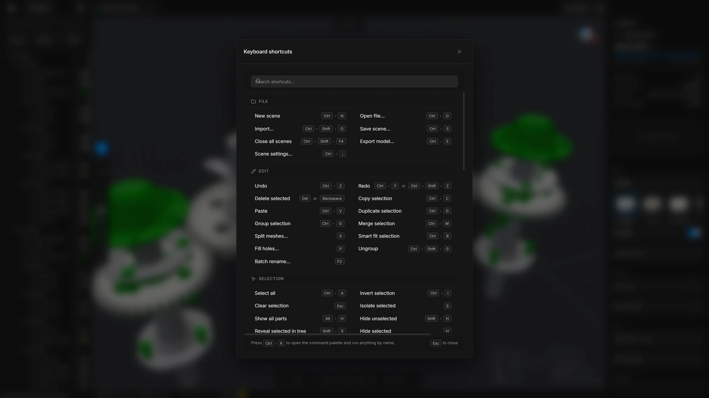

Keyboard shortcuts
Every keyboard shortcut and mouse action in MeshOptimiser v0.24.0, grouped by what it does.
On macOS, use ⌘ wherever this page says Ctrl.
Inside the app, press ? for the same list with a search field and a picture of the keyboard. Shortcuts with a single key do nothing while you are typing in a field, or while a window is open in front. This page lists the keys the app comes with. If you have changed some (see “Change a key” below), the app shows yours.


File
- AltN
- New scene, in a new tab. A browser keeps Ctrl + N for itself, to open a new browser window. In the installed app, Ctrl + N works too.
- CtrlO
- Open a file
- CtrlShiftO
- Import a file into the open scene
- CtrlS
- Save the scene
- CtrlE
- Export
- CtrlShiftF4
- Close all scenes. It asks once about the ones with unsaved changes.
- Ctrl;
- Scene settings
Edit
- CtrlZ
- Undo
- CtrlY
- Redo
- CtrlShiftZ
- Redo
- CtrlC
- Copy the selected parts
- CtrlV
- Paste
- CtrlD
- Duplicate the selection
- Del
- Delete the selection. Backspace does the same.
- CtrlG
- Group
- CtrlShiftG
- Ungroup
- CtrlM
- Merge the selected parts into one
- F2
- Batch rename
Tools
- X
- Split
- P
- Remove holes
- CtrlB
- Smart fit
- U
- Untriangulate the selection
- ShiftU
- Triangulate the selection
- B
- Quick remesh: pick how many triangles stay, under the pointer
- M
- Measure
- N
- Add a note: click a spot on the model, then write
- L
- Draw lines and shapes
- Enter
- Run the open command card
- Esc
- Put the open command card away. A second press clears the selection.
The key of a tool also closes its card when the card is already open. U and ShiftU work on the selection only. See Remesh, which also describes Quick remesh.
Smart optimise, Decimate, Fit to budget, Remove floating pieces, Sweep, Select hidden parts, Fasteners, Stacked copies and Align to floor have no key of their own. Find them on the toolbar, in the … list or with the search.
Selection
- CtrlA
- Select all
- CtrlI
- Invert the selection
- Esc
- Select nothing
- ShiftS
- Find the selected part in the tree
- CtrlClick
- In the tree: add a row to the selection or take it out. A group goes in or out with its parts.
- ShiftClick
- In the tree: pick every row from the last one you clicked to this one, groups and parts alike.
- ↑ ↓
- After a click in the tree: go to the row above or below. With Shift, add a row to the selection.
- → ←
- After a click in the tree: open a group, or close it. On a part, ← goes to the group that holds it.
- Home End
- After a click in the tree: go to the first or the last row.
Visibility
- H
- Hide the selection
- ShiftH
- Hide the rest
- AltH
- Show all
- S
- Isolate the selection, and back
View
- F
- Frame the selection, or the whole model
- Alt1
- Solid
- Alt2
- Wireframe
- Alt3
- X-ray
- Alt4
- Heatmap
- 5
- Clay, and back to solid
- 6
- CAD view, and back to solid
- Ctrl1
- Camera view (perspective)
- Ctrl2
- Top view
- Ctrl3
- Front view
- Ctrl4
- Side view
- G
- Show or hide the floor grid
Edit mesh
These work in the piece modes of Edit mesh. 1 to 4 are the keys that used to switch the view; the view modes are now on Alt and the same numbers.
- 1
- Points mode
- 2
- Edges mode
- 3
- Polygons mode
- 4
- Model mode: a click picks a whole part, as before
- CtrlA
- Pick everything of the selected parts
- Del
- Take out the picked pieces
- CtrlBackspace
- Dissolve the picked pieces
- ShiftClick
- With any pick tool: add to what is picked
- CtrlClick
- With any pick tool: take away from what is picked
- Double-click
- With the Click tool: pick a loop
Move, rotate, scale
- E
- Move
- R
- Rotate
- T
- Scale
- D
- Dynamic place: drag the selected part over other surfaces. Press it again to leave.
- Q
- Hide the gizmo
- Shift
- Hold while dragging the gizmo to snap
- ShiftScroll
- While snapping and dragging: a coarser or a finer step
Panels and windows
- CtrlK
- Search commands, parts, the library and settings
- ShiftC
- The same search
- ShiftEnter
- In the search, on a switch: go to the switch instead of turning it
- W
- Quick wand: hold it over the viewport, flick toward a command, let go. A quick tap leaves the ring open.
- ShiftL
- Library drawer
- ShiftM
- Materials drawer
- `
- Console
- Ctrl,
- Settings
- F1
- Help window
- ?
- Keyboard shortcuts
- CtrlF
- In Settings: jump to the search field
- CtrlEnter
- In Batch rename: apply
- Esc
- Close the open window or menu. It closes the Export, Import and Save scene windows too.
In the help window
- /
- Jump to the search field
- Enter
- In the search field: open the first result
- Esc
- Clear the search. Press it again to close the window.
Mouse, in the viewport
- Click
- Select a part
- ShiftClick
- Add to the selection
- CtrlClick
- Add to or remove from the selection
- CtrlDrag
- Box select
- CtrlShiftDrag
- Box select, adding to the selection
- Drag
- Orbit
- Middle drag
- Pan
- Right drag
- Pan
- Scroll
- Zoom, toward the cursor
- AltRight drag
- Zoom smoothly
- Right-click
- Menu for the part or the view
Mouse, elsewhere
- Double-click
- On a name in the tree or on a tab: rename
- Click
- In the tree: select a row
- ShiftClick
- In the tree: select a range of rows. In Heavy parts: tick a run of rows.
- CtrlClick
- In the tree: add a row to the selection or take it off
- Drag
- In the tree: move rows into a group or into another place
- Right-click
- On a tab: duplicate, close all, close others, open
- Middle click
- On a tab: close it
- Esc
- While dragging a tab: put it back
- Shift
- While dragging a number: ten times faster
- Alt
- While dragging a number: ten times finer
- Click
- On a number: type a value
- Right-click
- On a number field: Cut, Copy, Paste, Select all, Reset and quick edits of the number
- Double-click
- On the material card in Properties: rename the material
- Drag
- A material from the Materials dock into the view: assign it
- ShiftDrag
- A material onto another material: merge the two
On the start screen
- ← → ↑ ↓
- Walk the cards of the recent files. Up and down move by a row.
- Enter
- In the search field of the recent files: open the first match
Change a key
Every key can be changed except Esc, the Quick wand’s W and the mouse gestures. Open the list with ?.
- Click the shortcut you want to change, and press the new keys.
- If another command already has that combination, the app says which one and offers Replace. A few combinations are kept by the browser for itself (such as CtrlW and F5) and are refused.
- Use All commands to list the commands that have no key yet, so you can give them one.
The picture of the keyboard shows the keys that do something, lit and named after their command. Hold Ctrl, Shift or Alt, or click them in the picture, to see the keys of that combination, with the mouse gestures for the same keys under it. Press any combination to see what it does, or click a key to list everything on it.
Profiles
Your changes are kept in named profiles, in this browser. You can make a new one, duplicate, rename or delete one, and put every key back. Default is the app’s own keys and cannot be changed, so your first change starts a profile of your own.
The command search, the tooltips and the right-click menu show your keys. The keys written in the app menu and in the toolbar’s lists are still the default ones, and a command left without a key shows none.